At the end of January 2024, Janita and Jonathan left South Africa for Auckland, where Janita had accepted a post as a nuclear medicine technologist.
They took what most people take: too much luggage, wrapped in blue at the airport, and a family standing around the trolley not quite ready to say goodbye.
They also took Nova.
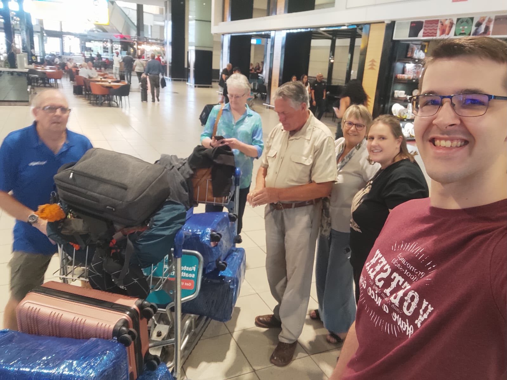
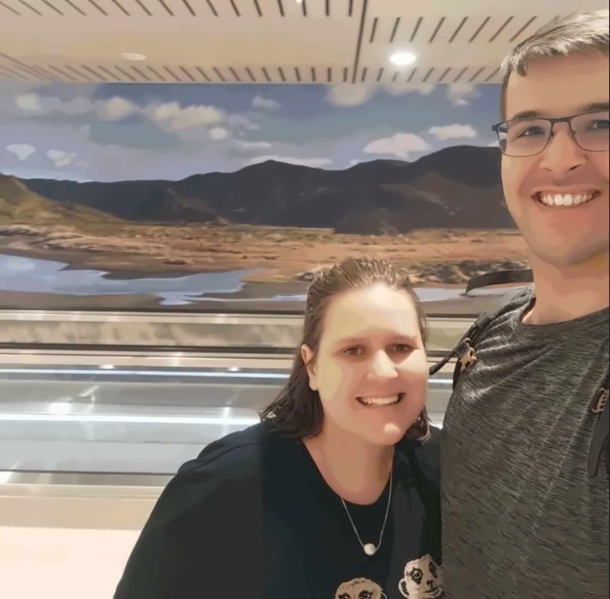
The job came first, and so did the CV
“Jonathan and I first met Sophie when she helped me secure a position as a nuclear medicine technologist in Auckland. From the very beginning, Sophie and her team supported us every step of the way. They helped me prepare for my interview, updated my CV and kept me informed throughout the entire process.”
Janita
Nuclear medicine is a small profession in New Zealand, with its own scope on the Medical Radiation Technologists Board register and its own way of doing things. The registration, the practising certificate that cannot be issued until you are in the country, the visa that runs alongside it all — none of it is complicated once someone puts it in order. Most of the work is keeping it in order while you are also packing up a life.
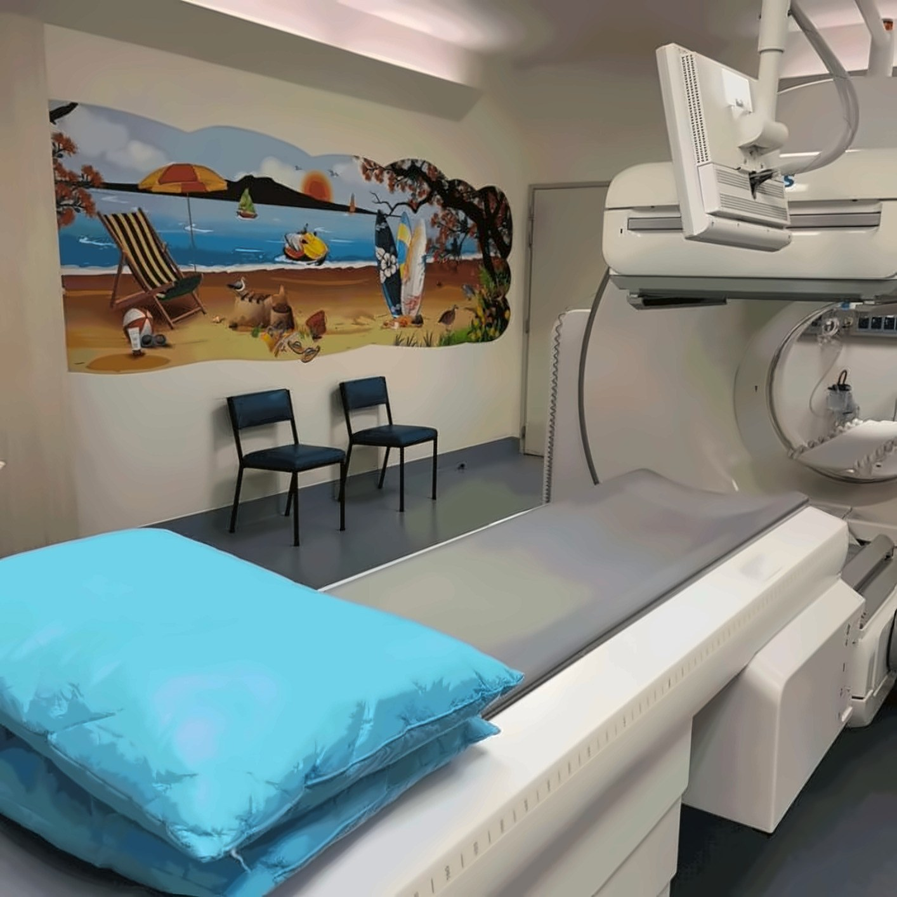
Moving a dog is a project of its own
A dog does not travel as luggage. Nova came through the import process with her own crate, her own paperwork and her own quarantine tape, and was collected from the boot of a car in Auckland rather than from a carousel.
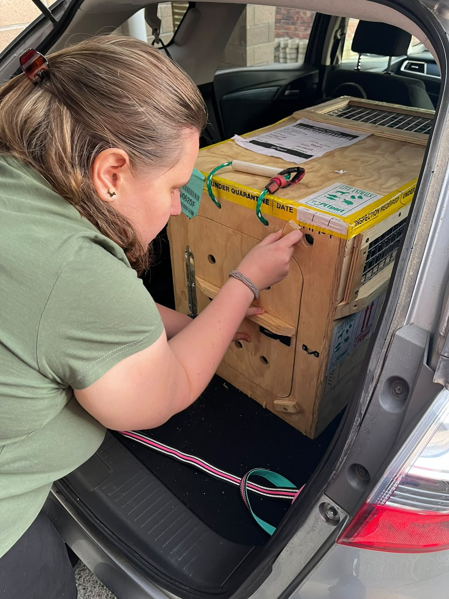
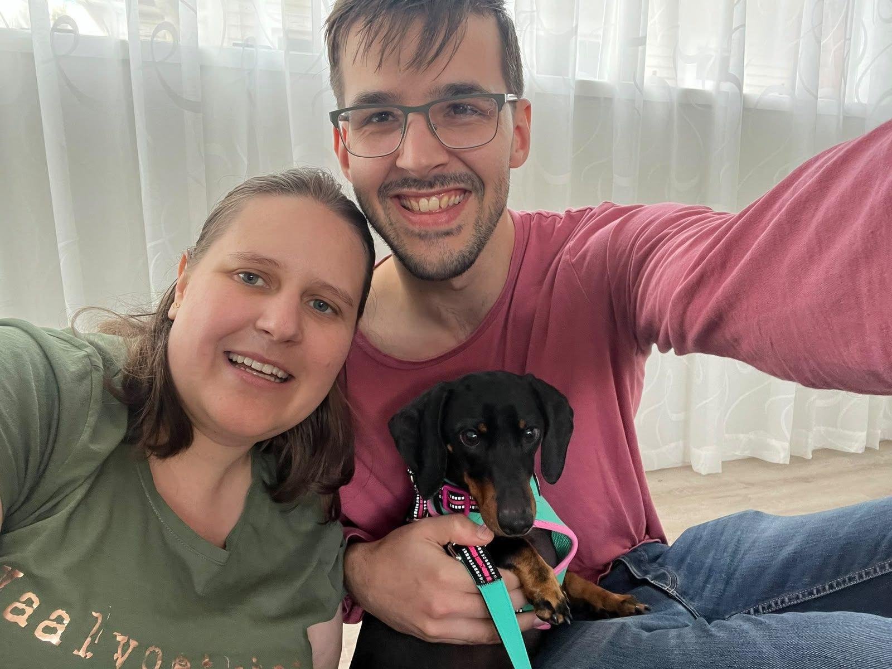
“It was a big move for us, especially since we also relocated our dog, Nova. We stayed in a hotel at first before settling into a rental home.”
Janita
If you are bringing an animal, the practical side is written up once, properly, in the pets and belongings guide. It is the part of the move with the longest lead time, and the one people leave latest.
Things generally just work
“Life in New Zealand has been wonderful in many ways. We feel safe, and things generally just work. No more load shedding! The country is beautiful and incredibly clean, and we love taking Nova for walks in the many parks and on the beaches. There are plenty of cultural attractions to explore, and the people are warm and friendly.”
Janita
That is a South African’s list, and worth reading as one. Safety and reliability sit at the top not because New Zealand is remarkable for them, but because they had been doing without both. What sounds ordinary from Manchester or Dublin is the whole point from Johannesburg or Cape Town.
The welcome started before any of that. Her new department left a bag of New Zealand things and a card on her desk for her first week — the sort of gesture that costs a team almost nothing and gets remembered years later.
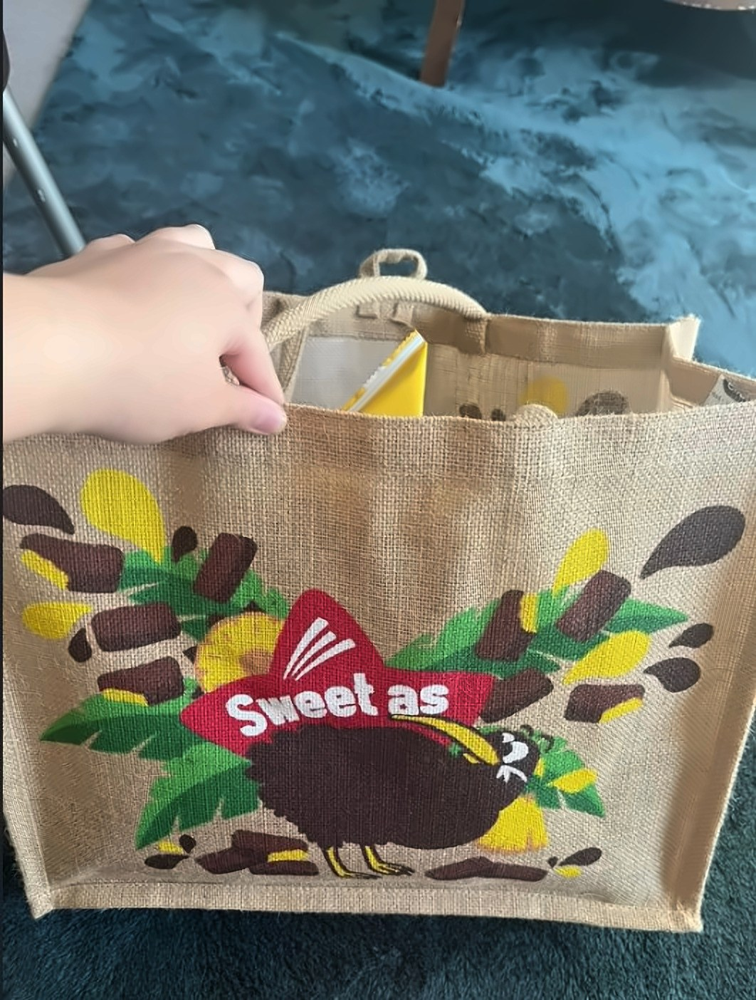
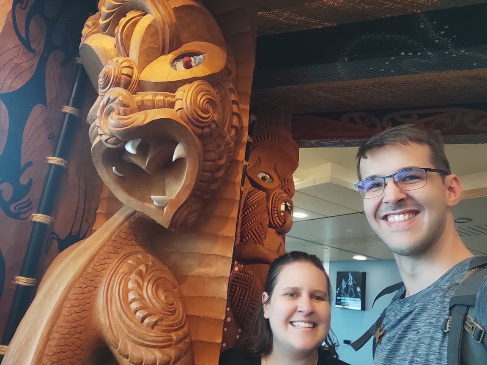
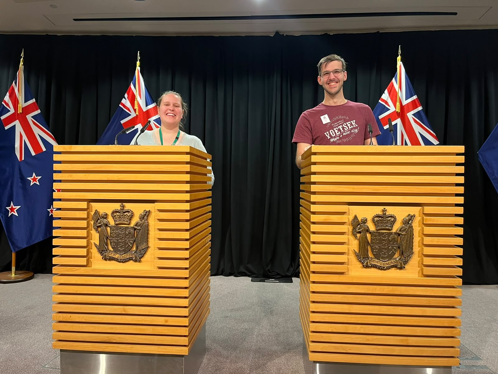
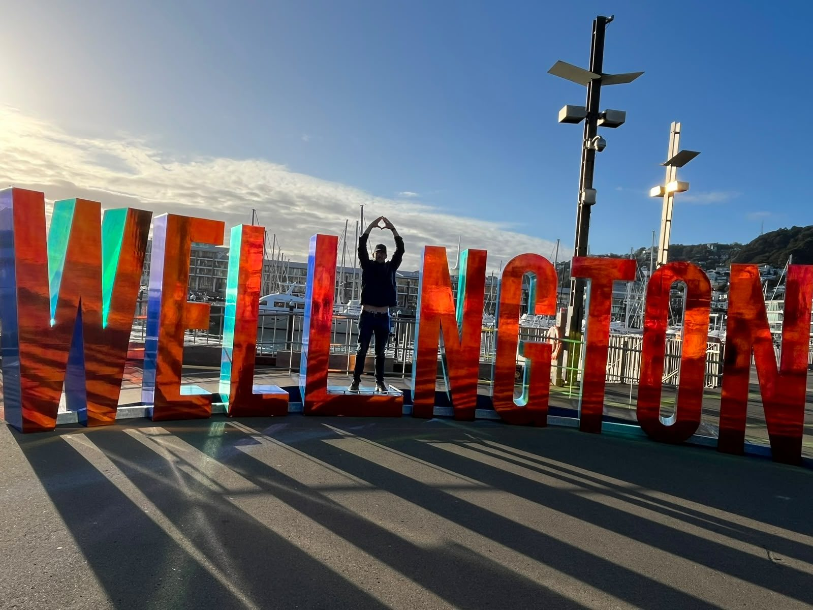
“Of course, we miss our loved ones and the sunny South African weather, so we feel very fortunate that both of our parents were able to come and visit us here.”
Janita
Finding work for Jonathan took a full year
This is the part that matters most to anyone reading this before their own move, and it is in Janita’s own words.
“Finding work for Jonathan took a full year, and saying it was tough would be an understatement. That experience taught us how important it is to research the job market properly before making a move like this.”
Janita
The clinician’s job is the reason for the move, and it is usually the easy half. The partner’s job is the half that decides whether the household settles — and it depends on their field, their qualification, the city, and a labour market that does not know them yet. A year is not unusual. It is also not inevitable, if the research happens before the flights are booked rather than after.
It is why we ask about the partner’s work in the first conversation, not the last, and why the family guide spends as long on partner employment as it does on schools.
Glad they made the decision
“Even so, we are very glad we made the decision. It has been a good move for us, and we are grateful to Sophie and Ethicare for helping make it possible.”
Janita
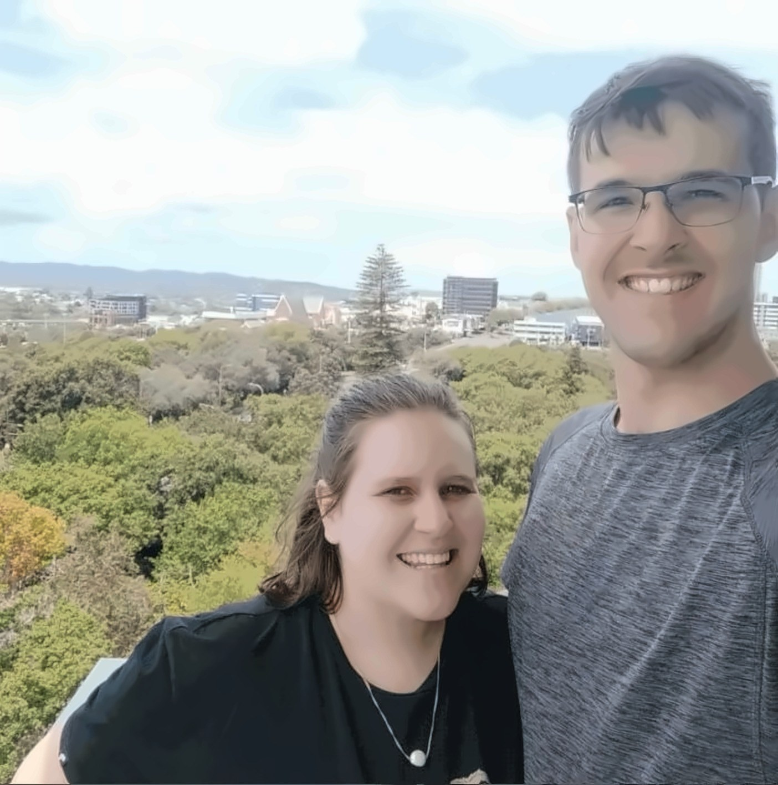
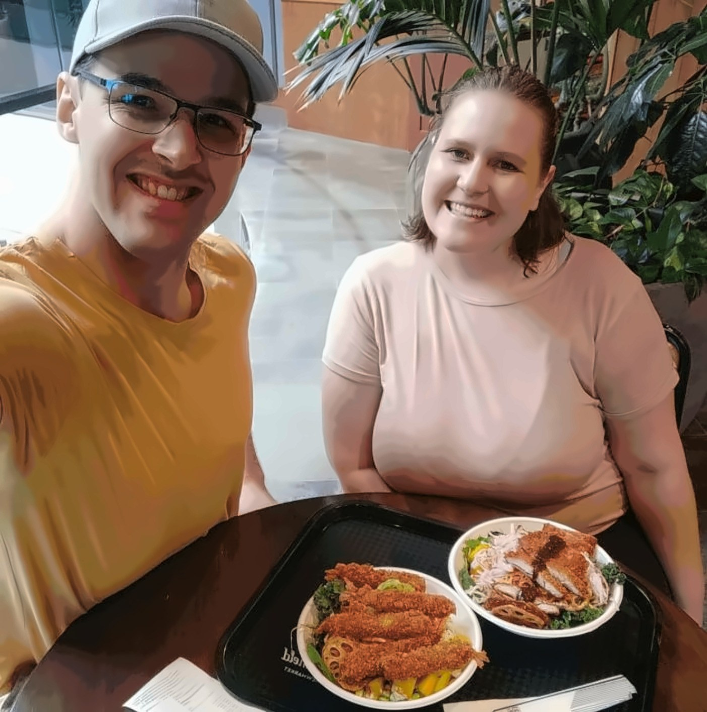
A job in a small profession, a rental after a hotel, a dog who now knows the beaches, two sets of parents who have made the long flight, and one hard year inside a good move.
That is what it was like.
Thinking about the same move?
The job gets you there. The rest is what decides whether you stay. Start with the profession, the place, or the question about your partner’s work.